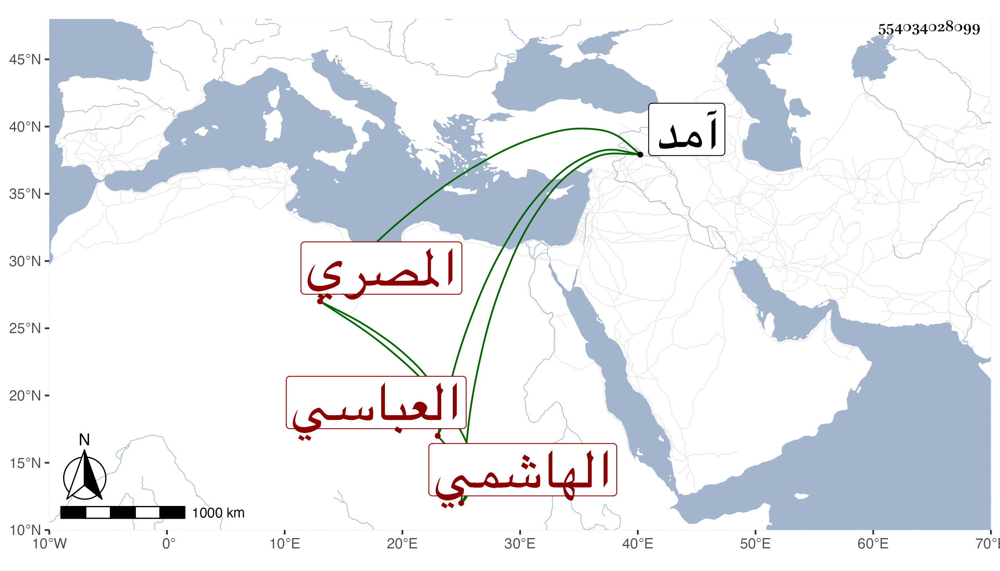

0902Sakhawi.DawLamic.ITO20230111-ara1.EIS1600.554034028099
Biography ID: 554034028099
805
داود بن محمد بن أبي بكر بن سليمان بن أحمد بن حسين المعتضد بالله أبو الفتح بن المتوكل على الله الهاشمي العباسي المصري أحد الأخوة وشقيق سليمان الآتي . بويع بالخلافة بعد خلع أخيه المستعين بالله أبي الفضل العباس في يوم الخميس سادس عشر ذي الحجة سنة ست عشرة وثمانمائة واستمر دهرا ، وكان خليقا لها بدون مرافع كريما عاقلا سيوسا دينا متواضعا حلو المحاضرة محبا في العلماء والفضلاء مع جودة الفهم والميل إلى الأدب وأهله والمحاسن الجمة ولما سافر مع الأشرف إلى آمد كان كثير الامداد لشيخنا والاهداء له فكتب له شيخنا بقوله :
| يا سيدا ساد بني الدنيا فهم | تحت لوائه الكريم المنعقد |
| أمددتني فضلا وشكري قاصر | فإن أردت الشكر مني فاقتصد |
| أشبهت عباس الندى في المحل إذ | أطاعه الغيث وكان قد فقد |
| إلى أبي الفضل انتهى الجود وفي | أولاده بقية فسل تجد |
| ماجد حتى حاز جود جده | إلا أمير المؤمنين المعتضد |
مات في ربيع الأول سنة خمس وأربعين وقد قارب السبعين بعد مرض طويل وصلى عليه بالسبيل المؤمني بحضور السلطان فمن دونه ، ودفن بالمشهد النفيسي رحمه الله واستقر بعده في الخلافة شقيقه سليمان .
